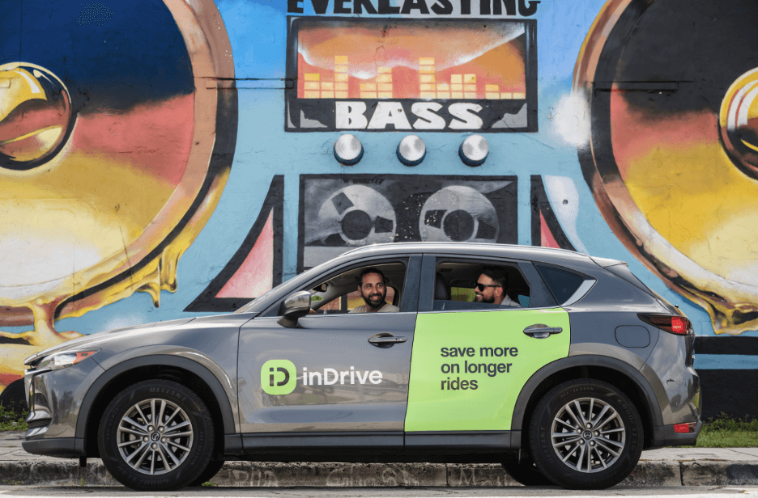
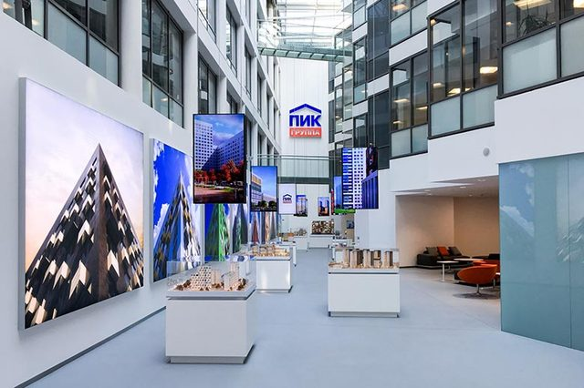
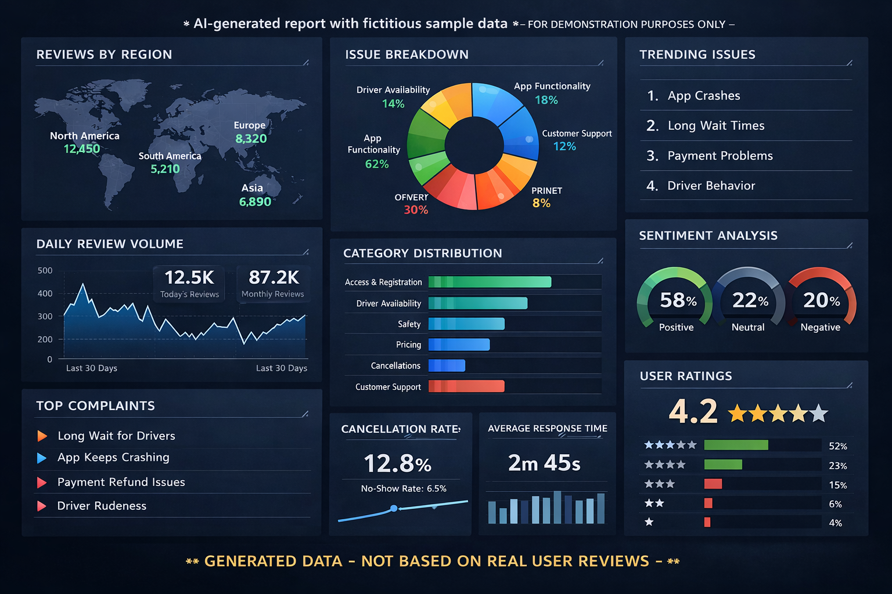
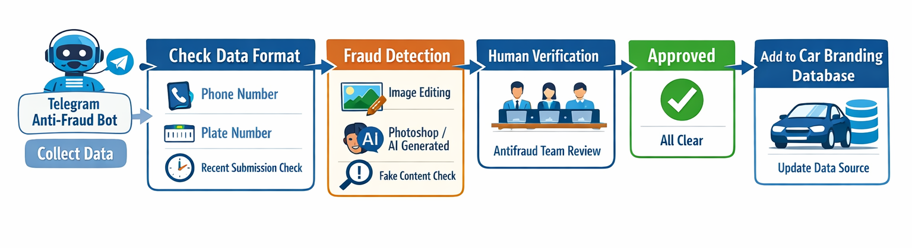
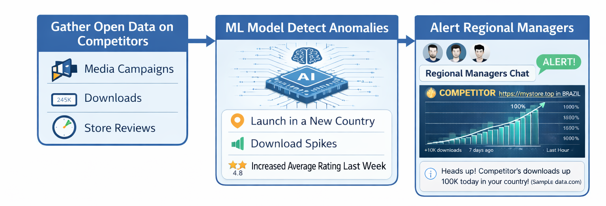
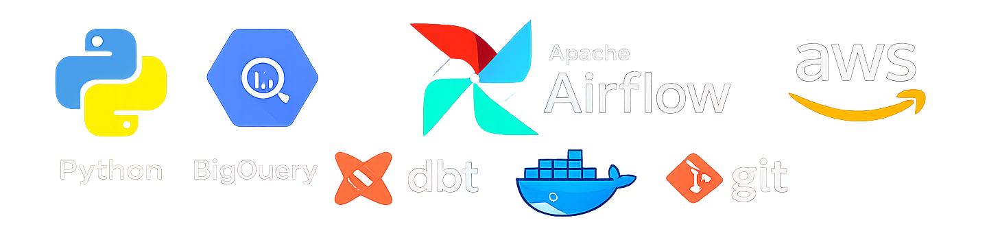

About me

Hello, I'm Alexandr Kotov. I started my career as an aerospace engineer, graduating from Bauman Moscow State Technical University where I spent 6 years studying plasma physics and rocket propulsion systems.
My transition into tech began when I discovered programming through teaching robotics. Working with Arduino and C++ sparked my interest, but it was Python's elegance and power that truly captivated me. This led me to pivot from aerospace to data engineering.
I began as a Data Analyst at PIK, Russia's largest real estate company, where I quickly took ownership of critical infrastructure—replacing an entire consulting firm to manage Tableau Server for 1500+ users. In 2022, I joined inDrive in Mexico City as a Data Engineer, where I now specialize in building scalable ETL/ELT pipelines, implementing LLM-powered solutions, and managing self-hosted data infrastructure.
Today, I'm passionate about solving complex problems through intelligent automation and continuously exploring new technologies in the data engineering space.
Education
Bauman Moscow State Technical University, Moscow | 2014 - 2020
Aerospace Engineering
Specialty: Design of aviation and rocket engines
Department of plasma power installations
(BMSTU is one of Russia's top technical universities, often referred to as "Russian MIT")

Hobbies
Sports
Sport is a big part of my life. One greatest achievement in my life would have to be my success in the sport of cheerleading. I started practicing at the age of seventeen. Cheerleading is a team-based sport that involves stunting, pyramids, baskets, tumbling, acrobatics. It was initially started in the USA, and now its growing sport in Europe. Why? Because it's fun!
It's a great sport because it's teamwork, it's all about athletes working together in unison to create something spectacular. What have I achieved during all these years of cheerleading? On a first year our team became a second best student team in Moscow and 4th team in Russia. Then after a few years we evolved and became a Russian Champions twice in 2018 and 2019. After that we had an honor to represent our country at the Europe Championship in Helsinki and St. Petersburg.

Travelling
When I have decent amount of free time I use it to visit a new place. Preferable way to travel is usually hitchhiking. Cheap, fun and challenging. Plus it's the best way to meet locals and get to know a lot about real local mindset and culture!
I've visited about 60 countries so far and going to increase this number.

Experience
Data Analyst/Data Engineer
inDrive (Global ride-hailing platform)
2022 - Present | Mexico City, Mexico
Data Engineering:
- Built and maintain a self-hosted Airflow server managing end-to-end marketing ETL/ELT data pipelines with automated monitoring via Telegram/Slack alerts
- Engineered data ingestion from diverse sources including REST APIs, web scraping, open-source datasets, and messaging platforms
- Designed and continuously optimize an LLM-based text classification system, improving accuracy from 75% to 97% through iterative model evaluation and prompt engineering
- Reduced processing costs by 70% and cut processing time in half by tracking LLM market developments and migrating to more efficient models
- Created real-time competitive intelligence alerts and sentiment tracking system enabling business and product teams to monitor market positioning
- Built an anti-fraud Telegram bot that detects photo manipulation and metadata issues in branded vehicle images while simultaneously serving as a global data source for tracking and analyzing branded vehicles
- Built dbt transformation pipelines for marketing analytics, creating reusable models to track campaign performance across multiple channels
Data Analytics:
- Optimized legacy BigQuery queries, reducing execution time and resource usage by 30%
- Analyzed data across multiple database systems (BigQuery, PostgreSQL, MySQL, Presto, SQLite) to support business decisions
- Built Tableau dashboards to visualize key metrics

Data Analyst
PIK (Russia's largest real estate developer)
2021 - 2022 | Moscow, Russia
Data Analytics:
- Analyzed data across multiple SQL databases (MSSQL, PostgreSQL, MySQL) and built Tableau dashboards for various business units
Tableau Server Administration:
- Took full ownership of Tableau Server administration within months, replacing an external consulting company and independently managing infrastructure for 1500+ users
- Managed end-to-end server operations including installation, configuration, site management, licensing, cross-server migrations, and access control
- Developed a Python script to track user activity and automatically remove inactive users, reducing license costs by 30%
- Automated administrative processes and deployed a Telegram notification system for proactive server monitoring

Robotics Teacher
Era of Engineers
2019 - 2020 | Moscow, Russia
- Led robotics classes for 6-15 year-olds for 2 years, teaching Arduino programming, CAD, and electrical engineering while developing hands-on projects including plotters, walking robots, and smart devices

Professional Projects
LLM-Powered Text Classification System
Technologies: Python, OpenAI API, Airflow, BigQuery
Designed and implemented an intelligent text classification system for processing marketing data (reviews, comments, external content) at scale. The system uses advanced prompt engineering and continuous model optimization to achieve high accuracy while maintaining cost efficiency.
Key Achievements:
- Improved classification accuracy from 75% to 97% through iterative testing and optimization
- Reduced processing costs by 70% by tracking LLM market developments and migrating to more efficient models
- Cut processing time in half through automation and optimization
- Continuously evaluate new models, prompts, and approaches to improve quality

Self-Hosted Airflow Infrastructure
Technologies: Apache Airflow, Docker, Linux (Ubuntu), Python, Telegram/Slack APIs
Built and maintain a complete self-hosted Airflow server that orchestrates end-to-end marketing data pipelines. The infrastructure includes automated monitoring, alerting, and data quality tracking across diverse data sources.
Key Features:
- Manage server updates, fixes, and optimization independently
- Automated data ingestion from REST APIs, web scraping, open-source datasets, and messaging platforms
- Real-time monitoring through Telegram/Slack bot alerts for pipeline status and data quality
- Event-based alerts for business and product teams to track competitors
Anti-Fraud & Global Vehicle Tracking Bot
Technologies: Python, Computer Vision, Telegram API, Metadata Analysis
Developed a dual-purpose Telegram bot that serves both as a fraud detection tool and a global data collection system for the car branding team.
Capabilities:
- Detects Photoshop manipulation and metadata inconsistencies in branded vehicle photos
- Validates photo authenticity for branded car and merchandise images
- Simultaneously serves as a centralized database for tracking branded vehicle locations worldwide
- Enables real-time analysis of branded vehicle distribution across global markets

Competitor Activity Monitoring & Alert System
Technologies: Python, Airflow, BigQuery, LLMs, Slack API
Built an automated competitor monitoring system that tracks public external signals
(app downloads, digital presence, campaign activity) and detects abnormal spikes
using anomaly detection.
Key Features:
- Automated ingestion of competitor open-source and public external data
- Anomaly detection to identify sudden increases in activity or campaigns
- Time-series visualization of competitor activity trends
- Automatic alerts with graphs sent to regional Slack channels
- Enabled business teams to react early to competitor launches and campaigns

Skills & Tech Stack

Programming & Data
- Python
- SQL (BigQuery, PostgreSQL, MySQL, Presto, SQLite, MSSQL)
- Apache Airflow
- dbt
- Pandas, NumPy
Machine Learning & LLMs
- LLM Integration (OpenAI API, Claude API)
- Prompt Engineering
- Model Evaluation & Optimization
- Computer Vision (OpenCV)
Infrastructure & DevOps
- Linux (Ubuntu)
- Docker
- Git
- AWS
Visualization & BI
Other
- Web Scraping (Selenium, BeautifulSoup)
- REST APIs
- Telegram/Slack Bot Development
- Arduino (C++)
Certificates

Languages
- Russian - Native
- English - Fluent
- Spanish - Intermediate